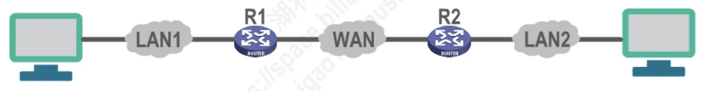
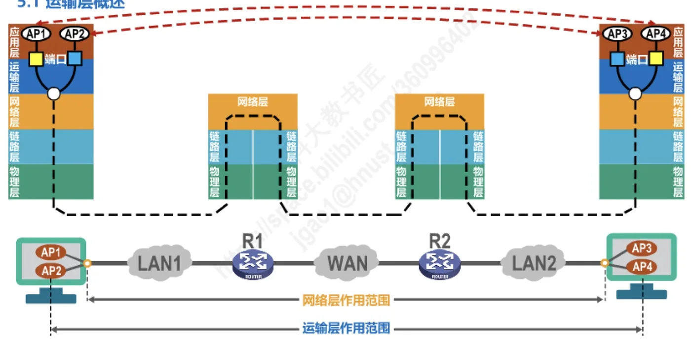

计算机通信与网络 · 第 5 章 运输层
5.1 运输层概述
第 4 章的网络层已经能把数据包从源主机送到目的主机，可主机里真正收发数据的并不是主机本身，而是运行在主机上的进程。本章补上的正是这一段：运输层怎样为不同主机上的应用进程提供直接的通信服务。本节先交代运输层在协议栈中的位置，再看它与网络层的分工——一个负责主机到主机，一个负责进程到进程，进而引出「端到端的逻辑通信信道」这一核心说法和因特网的两种运输协议 TCP 与 UDP，为本章后面各节作铺垫。
1. 通信的真正实体是主机中的进程
运输层在体系结构中的位置很明确：它紧挨在网络层之上、应用层之下，向上为应用层提供通信服务，向下使用网络层已经具备的、主机到主机的分组传送能力。要理解它究竟补上了什么，先要看清它「接手」时下面的层次已经做到了什么。
前面几章介绍的计算机网络体系结构中的物理层、数据链路层以及网络层，共同解决了将主机通过异构网络互联起来所面临的问题，实现了主机到主机的通信。图 1 中 LAN1、LAN2 是两个不同类型的局域网，把它们连接起来的是中间的广域网 WAN 和路由器 R1、R2：只要网络层把数据包交给了目的主机，下面三层的任务就算完成。

但实际上，在计算机网络中进行通信的真正实体是位于通信两端主机中的进程。例如 LAN1 里的 AP1、AP2 与 LAN2 里的 AP3、AP4 就是这样一些应用进程，它们才是通信的发起者和接收者。网络层把数据包送到目的主机之后就不再过问：这个数据包到底该交给主机中的哪一个进程，网络层既不负责，也没有办法区分。
如何为运行在不同主机上的应用进程提供直接的通信服务，就是运输层的任务。运输层把通信的两端从「主机」精确到了「进程」，所以运输层协议又称为端到端协议。
（1）端到端与点到点的分工
「端到端」是相对于网络层的「主机到主机」提出来的。网络层及其下面的两层是逐段工作的：数据包每经过一段链路、一台路由器，都要重新封装、重新转发，中间设备只关心「下一跳该往哪儿走」，并不关心通信两端究竟是谁，这种一段接一段接力的方式通常就称为点到点的方式。运输层不同，它只出现在通信两端的主机中，中间的路由器不需要实现运输层；两端主机中的运输层实体隔着整个网络「对话」，就好像它们之间有一条直通的信道，这就是端到端。
2. 运输层与网络层的作用范围
两种分工在图中看得很直观：图 2 把通信两端主机中的进程、中间的路由器和网络画在一起，并用上下两条双向箭头分别标出网络层作用范围和运输层作用范围，这是本节最值得记住的一幅图。

对照图 2 可以看出两层的分工：网络层的作用范围覆盖通信两端的主机以及中间经过的所有路由器和网络，它负责把数据包一段一段地接力送到目的主机；运输层的作用范围则只落在通信两端的主机里，中间的路由器只用到下面的三层，不需要运输层参与。由此可以说，网络层解决的是「数据包怎样到达目的主机」，运输层解决的是「到达目的主机以后怎样交给正确的应用进程，并让这个过程满足应用的需要」。也正因为如此，本章要讲的 TCP、UDP 都只运行在端系统（主机）上，路由器中没有它们。
3. 端到端的逻辑通信信道
运输层直接为应用进程间的逻辑通信提供服务。它向高层用户屏蔽了下面网络核心的细节，如网络拓扑、所采用的路由选择协议等，使应用进程看见的就好像是在两个运输层实体之间有一条端到端的逻辑通信信道。
请留意「逻辑」二字：两个进程之间并没有一条专用的物理线路，数据依然要经过一台台路由器、一段段链路转发，路径还可能随网络状况变化；运输层把这些细节全部挡住，只向上提供一条看起来端到端直通的信道。应用程序因此不必了解网络内部是怎么走的，也不必为中间设备的差异操心。这正是分层思想在运输层的体现：下面越复杂，上面看见的接口就越简单。至于两个应用进程以什么方式组织通信——是客户—服务器方式还是对等方式——那是应用层的问题，将在 6.2 节讨论。
4. 因特网运输层的两种协议：TCP 与 UDP
根据应用需求的不同，因特网的运输层为应用层提供了两种不同的运输协议，即面向连接的 TCP（Transmission Control Protocol，传输控制协议）和无连接的 UDP（User Datagram Protocol，用户数据报协议），这两种协议就是本章要讨论的主要内容。
之所以要提供两种，是因为上层应用对运输服务的要求并不一样：有的应用要求数据一个不丢、按序到达，宁可与对端先建立连接，用确认与重传的机制换取可靠性；有的应用更看重传输的及时和开销小，个别数据丢失可以由应用自己容忍。两种协议正是围绕这一差别来设计的，各自适合不同的场合，具体对比放在 5.3 节。
还有一个必须回答的问题：一台主机上通常同时运行着多个应用进程，运输层从网络层收到数据后，怎么知道该把它交给哪一个进程？这就是下一节 5.2 要讲的端口号以及复用与分用。此后的路线是：5.3 节把 UDP 与 TCP 放在一起逐项对比，5.4 节起转入 TCP 的具体机制——流量控制、拥塞控制、超时重传时间的选择、可靠传输的实现与运输连接管理，最后 5.9 节介绍 TCP 报文段的首部格式。
注记：从 20 世纪 90 年代至今，公共因特网上实际使用的运输层协议仍然主要是 TCP 和 UDP 这两种；SCTP、DCCP 等协议虽已标准化但并未大规模部署，较新的 QUIC 也是运行在 UDP 之上，运输层这一格局并没有改变。
本节小结
- 物理层、数据链路层以及网络层共同解决了将主机通过异构网络互联起来的问题，实现的是主机到主机的通信；
- 在计算机网络中进行通信的真正实体是位于通信两端主机中的进程，为运行在不同主机上的应用进程提供直接的通信服务是运输层的任务，所以运输层协议又称为端到端协议；
- 网络层的作用范围一直延伸到中间的路由器，运输层只存在于通信两端的主机中：网络层负责数据包怎样到达目的主机，运输层负责数据怎样交付给正确的进程；
- 运输层直接为应用进程间的逻辑通信提供服务，它向高层用户屏蔽了网络核心的细节（网络拓扑、所采用的路由选择协议等），使应用进程看见的就好像两个运输层实体之间有一条端到端的逻辑通信信道；
- 根据应用需求的不同，因特网的运输层为应用层提供了两种运输协议：面向连接的 TCP 与无连接的 UDP，这两种协议就是本章讨论的主要内容；下一节先解决「数据交给哪个进程」的问题——端口号、复用与分用。